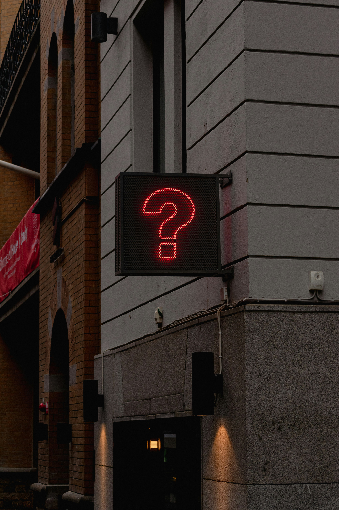
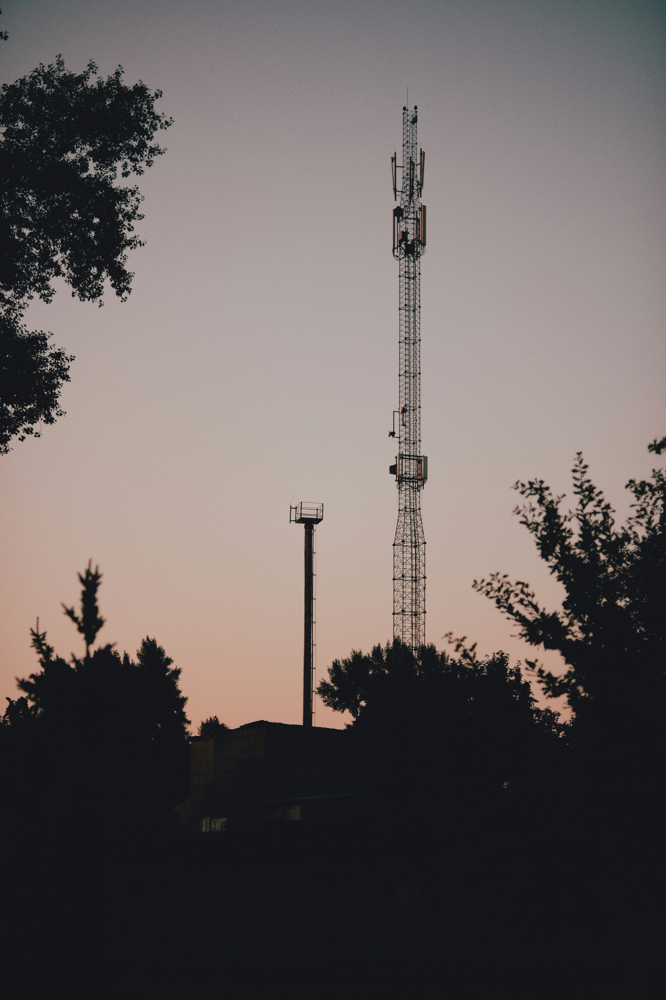
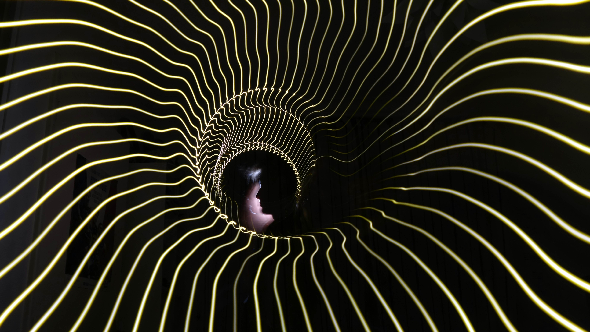

This website is made by Awol
Who is Awol? What is Awol? When is Awol? Where is Awol? Why is Awol? There are some questions that simply cannot be answered without going awol.
Who is Awol? What is Awol? When is Awol? Where is Awol? Why is Awol? There are some questions that simply cannot be answered without going awol.


AWOL is the static between radio stations, not lost, just tuned to a frequency most can't find. A ghost in the grid who speaks fluent silence and builds cathedrals out of whitespace.

If a div collapses in the forest and no one inspects the element, does it overflow? AWOL doesn't answer questions. AWOL lets the questions dissolve until only the hum remains.

I fold light into rectangles and whisper coordinates to the void. Sometimes the void whispers back. Sometimes it returns a 404. Both are sacred.
AWOL once dreamed in hexadecimal. Woke up and the colors were wrong in every reality except this one. Still investigating.
AWOL is what happens when smoke learns to spell its own name. Not a destination but the ache between two places that refuse to meet. Some hear AWOL in the pause before a thunderclap decides to commit. Others find it pressed between pages of a book that rewrites itself every time you blink. AWOL doesn't arrive — AWOL is already the chair you forgot you were sitting in.